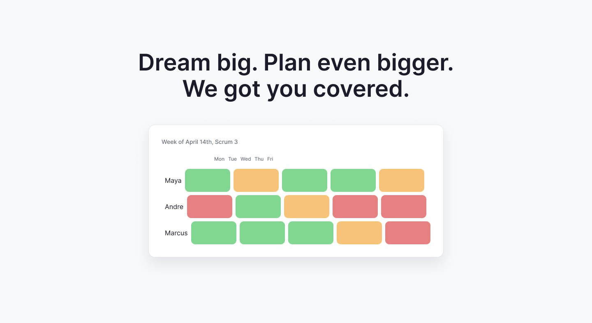
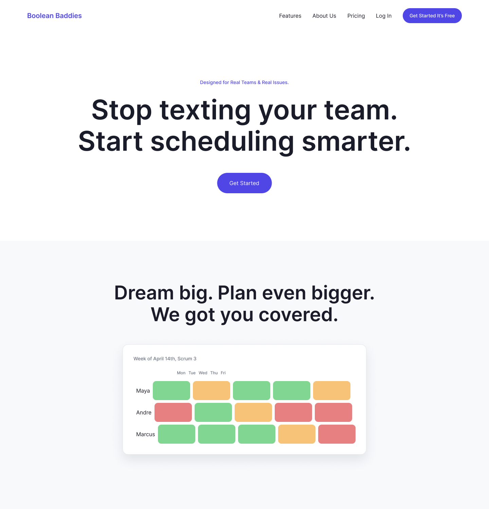
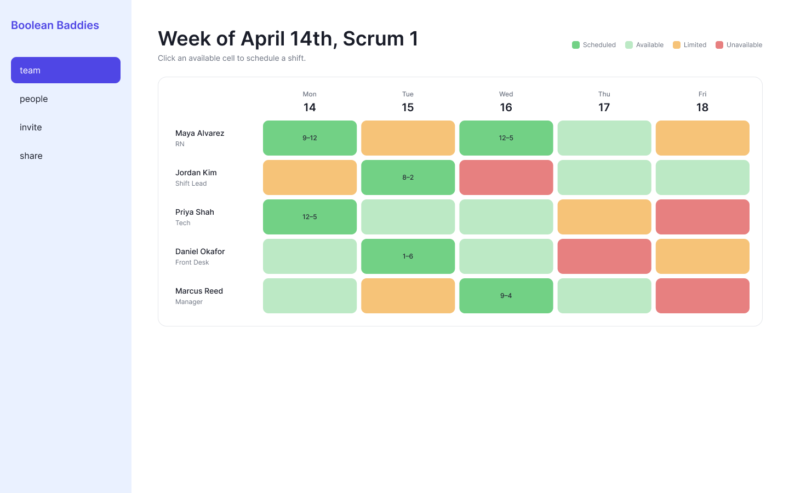

01
Dashboard
Central hub for all activity
- Announcements
- Polls
- Schedule updates
Why: Key info gets lost in chats; the dashboard keeps it visible.
One lightweight platform that unifies availability polling, scheduling, and announcements, so small teams stop juggling three tools to plan one week.

A lightweight scheduling tool for small teams. It combines availability polling, shift scheduling, and announcements in one place, replacing the patchwork of When2Meet, Sheets, and group chats.
On a team of 5, I ran user interviews, co-authored the spec, and drove the Figma prototype.
Scheduling pain rarely comes from a lack of tools. It comes from tools that are disconnected.
Every change means another round of manual updates.
Availability in When2Meet, schedules in Sheets, updates in Discord.
Updates get buried in message threads.
Teams want affordable, not enterprise.
Market research confirmed the gap: tools are either too simple or too complex, and none combine scheduling, communication, and coordination. The direction: one lightweight system that automates communication and cuts fragmentation.
Each module maps back to a research insight.
Central hub for all activity
Why: Key info gets lost in chats; the dashboard keeps it visible.
Collect team availability efficiently
Why: Fixes When2Meet's poor contrast, clumsy selection, and lack of prioritization.
Structured communication channel
Why: Replaces group chats where updates get buried.
Real-time scheduling system
Why: Addresses schedule volatility and manual coordination.
Manage team structure
Why: Replaces group chats scattered across platforms.


Schedaddle pulls every job into one system.
| Feature | Current workflow | Our solution |
|---|---|---|
| Dashboard | Multiple tools (Sheets, When2Meet, Teams, Discord) | Announcements, schedules, and to-dos in one place |
| Availability Poll | When2Meet: limited dragging, hard to prioritize or remove people | Repeatable drag selection and the ability to prioritize specific people |
| Announcements | Easily missed or lost in message threads | Centralized and organized, recent updates clearly visible |
| Shift Scheduling | Manually notify people and find replacements | App identifies the gap and notifies others to fill in |
| Creating Teams | Teams created across different messaging platforms | Team creation and management inside one app |
I replaced real-time messaging with Partiful-style announcements, cutting a redundant channel and its encryption overhead to keep the MVP focused on coordination, not rebuilding chat.
Teams already have chat. What they lacked was one place to keep decisions, availability, and schedules visible.
We carried research through to a clickable prototype that validates the core flows. Next: usability testing and a higher-fidelity pass.